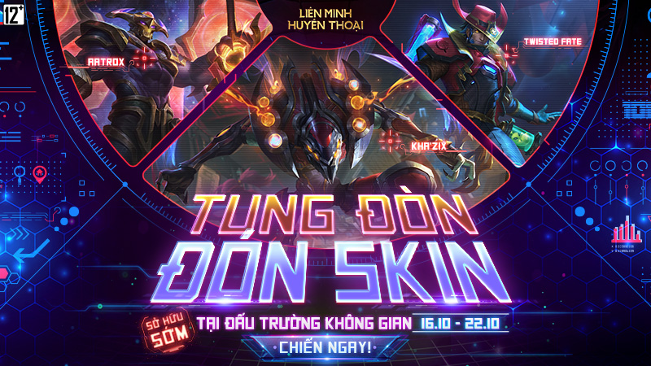
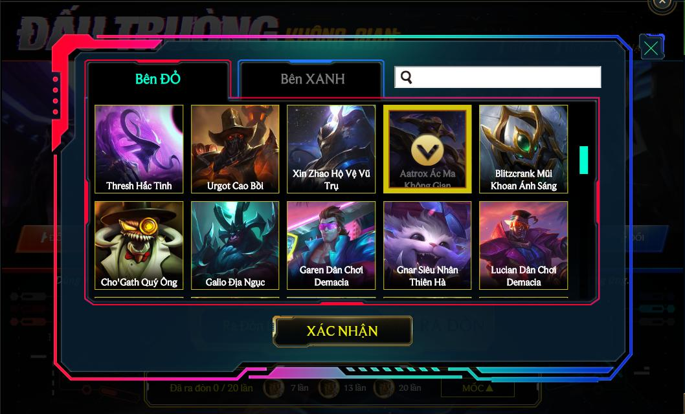
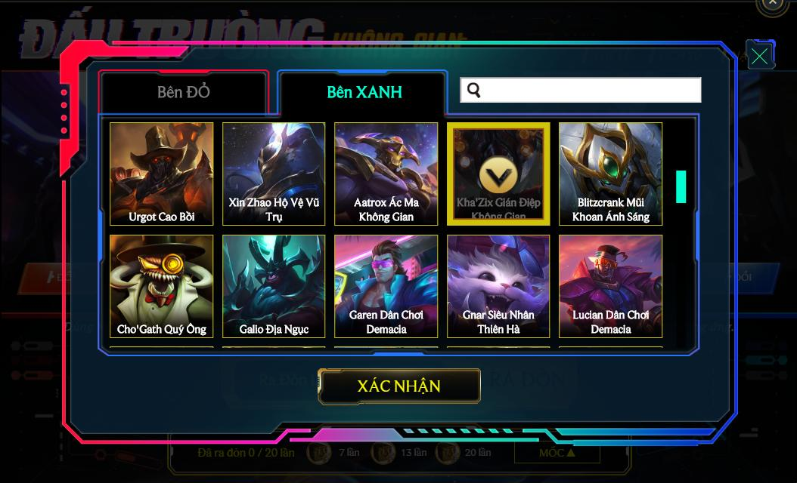
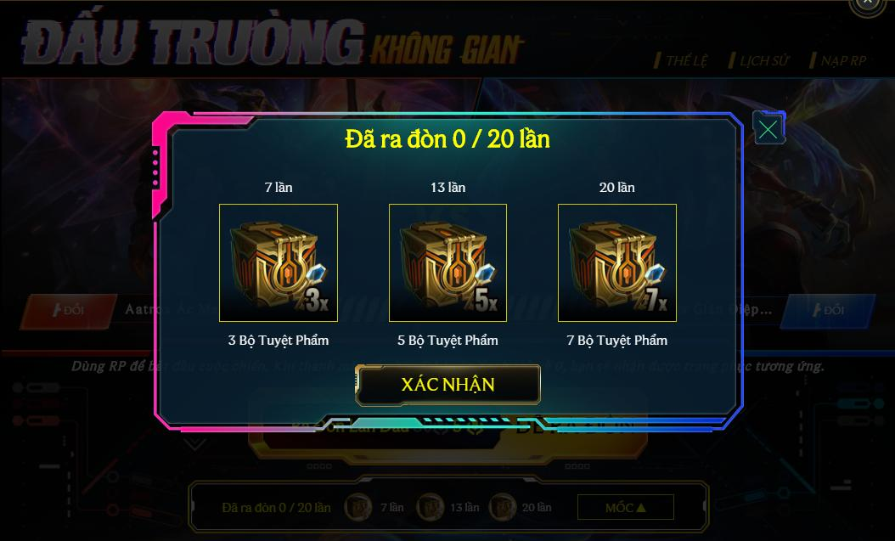

Quay lại trang chủ
Tham gia “Đấu Trường Không Gian” – Tung đòn, Đón skin từ 16/10 đến 22/10
Sở hữu sớm ngay các Ngoại Binh Không Gian qua sự kiện hấp dẫn!

Thời Gian Sự Kiện
Sự kiện Đấu Trường Không Gian sẽ diễn ra từ 10:00 16/10/2020 đến 23:59 22/10/2020.
Nội Dung Sự Kiện

-
Người chơi chọn 2 trang phục trong danh sách trang phục của sự kiện. Danh sách bao gồm các trang phục 210-396 RP đang bán trong Cửa Hàng (không bao gồm trang phục Giới Hạn, Hàng Hiệu, Đá Quý, Di Sản và các trang phục ra mắt gần đây). Nếu đã sở hữu tất cả trang phục trong danh sách, người chơi có thể chọn 5 Bộ Tuyệt Phẩm hoặc 7 Bộ Tuyệt Phẩm thay thế.
-
Các trang phục Phi Đội Không Gian mới sẽ có trong danh sách trang phục của sự kiện. Các trang phục này sẽ được mở bán sau khi sự kiện kết thúc.

-
Mỗi trang phục được phân vào 1 bên: bên ĐỎ hoặc bên XANH. Người chơi dùng 30 RP để RA ĐÒN. Khi đó, hai bên ĐỎ và Xanh sẽ gây ngẫu nhiên 0/1/2/10 sát thương lên đối phương.
-
Mỗi lần RA ĐÒN, người chơi nhận được ngẫu nhiên 1 trong số các đồ sau: 50 Kỉ vật Thế Giới, Rương Hextech, Chìa Khóa Hextech, Biểu Cảm Kỳ Bí, 60 Tinh Hoa Cam, Rương Tuyệt Phẩm, Bộ Hextech, Viên Thế Giới.
-
Lần RA ĐÒN đầu tiên chỉ mất 5 RP.
-
Khi thanh máu của 1 bên trở về 0, người chơi nhận được trang phục của bên đó. Tiếp đó, người chơi có thể chọn trang phục mới cho bên vừa bị hạ gục. Trang phục mới sẽ lại có 10 máu, còn máu của trang phục thắng cuộc vẫn giữ nguyên.

-
Sau khi RA ĐÒN 7/13/20 lần, người chơi nhận được 3/5/7 Bộ Tuyệt Phẩm (chỉ áp dụng với 20 lần RA ĐÒN đầu).
Lưu Ý
-
Phần thưởng sự kiện chỉ có hiệu lực trong thời gian sự kiện diễn ra. Vui lòng nhận phần thưởng trước khi sự kiện kết thúc.
-
Sự kiện dựa trên xác suất ngẫu nhiên. Vui lòng cân nhắc trước khi tham gia.
-
Các trang phục Giới Hạn, Thần Thoại, hoặc trang phục ra mắt gần đây sẽ không có trong sự kiện.
-
Hệ thống sẽ gửi vật phẩm trực tiếp đến tài khoản của bạn. Quá trình này có thể mất tối đa 1 ngày. Xin hãy kiên nhẫn nhé.
-
Trường hợp lợi dụng lỗi sự kiện sẽ bị xử lý theo quy định của Liên Minh Huyền Thoại, tùy theo tính chất và mức độ vi phạm. Lỗi sự kiện là những trường hợp sự kiện hoạt động không đúng theo mô tả sự kiện trong Thể Lệ.
-
Nếu gặp vấn đề trong sự kiện. Vui lòng liên hệ Chăm Sóc Khách Hàng để được hỗ trợ.